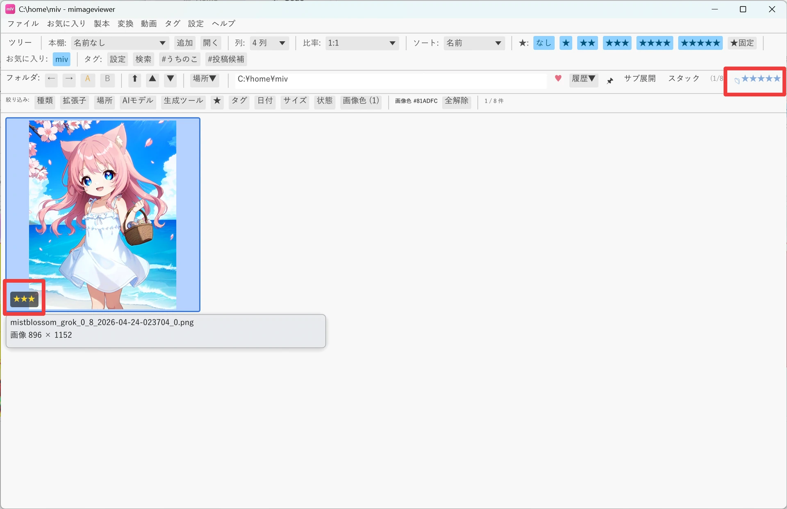
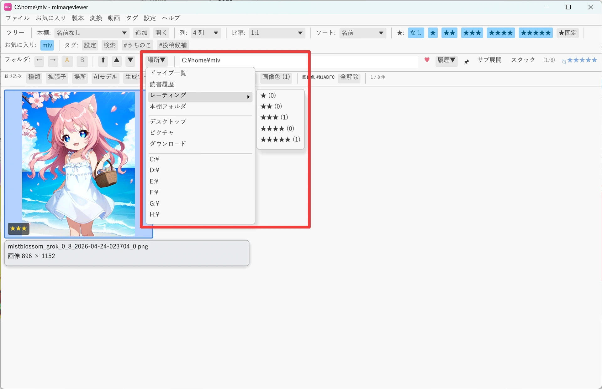

レーティングで星付け・横断一覧
気に入った画像や動画に ☆1〜☆5 の評価を付けておくと、後から「★を付けた項目だけ」をフォルダをまたいで 1 つの一覧に集めて見返せます。タグのように名前を付ける手間がなく、キー 1 つで済むのが特徴です。
キー操作で ☆ を付ける
サムネイル一覧・フルスクリーンのどちらでも、同じキーで評価を付けられます。対象は画像ファイル・動画・音声・ZIP 内画像・ PDF ページのほか、フォルダ / ZIP / PDF ファイル本体にも「コンテナ★」として個別に付けられます （中身のページ単位の★とは独立に管理されます）。
| キー | 動作 |
|---|---|
| F1〜F5 | カーソル位置（チェック済みがあればチェックした全項目）に ★1〜★5 を付与 |
| F6 | ★を解除（未評価に戻す） |
| Shift+F1〜F5 | 現在一覧表示中のフォルダ / ZIP / PDF 本体にコンテナ★を付与 |
| Shift+F6 | コンテナ★を解除 |
| Ctrl+Z / Ctrl+Y | 直前のレーティング操作を取り消す / やり直す（一括付与も 1 回で元に戻ります） |
- チェック済みアイテムがある状態で押すと、まとめて一括付与できます（操作後チェックは解除されます）
- フルスクリーン表示中も同じキーで付けられます。Shift+Fn は「今見ている画像が入っているコンテナ」が対象です
- ドライブ一覧ではレーティング操作は無効です

場所をまたいで見返す — レーティング一覧
ファイルメニューの「レーティング一覧」、またはフォルダバーの「場所▼」→「レーティング」から ★1〜★5 のいずれかを選ぶと、 その★が付いた画像・動画・音声・フォルダ・ZIP / PDF 本体などを、置いてある場所に関係なく 1 つの一覧として開けます。
- 一覧の既定ソートは「★設定時刻 ↓」（最近★を付けた順）です
- レーティング一覧を開いている間だけ、ソートメニューに「★設定時刻 ↓」「★設定時刻 ↑」が追加されます
- XMP から取り込まれただけの★や旧バージョンで付けた★は設定時刻なしとして扱われ、時刻順では時刻ありの項目より後ろに並びます
- 一覧を開いている間は選んだ★が固定条件になるため、ツールバーの★フィルタは操作できません。通常のフォルダへ移動すると元の操作に戻ります

通常のフォルダ表示でも、ツールバーの「★:」セクションで表示するレーティングを絞り込めます。バッジを
Ctrl+クリックで「そのレーティングだけ」、Shift+クリックで「そのレーティング以上」に絞れます。
画像系・コンテナ系の両方に同じフィルタが効くので、「★4 以上のフォルダだけ表示」といった使い方もできます。
レーティングの詳しい仕様（絞り込みフィルタの各種クリック操作、フォルダ配下の★件数バッジ、XMP への
書き込み設定など）はグリッド表示リファレンスの「レーティング（★）」にまとまっています。
キー割り当ての一覧はキーボードショートカットを、変更したい場合は
操作カスタマイズを参照してください。